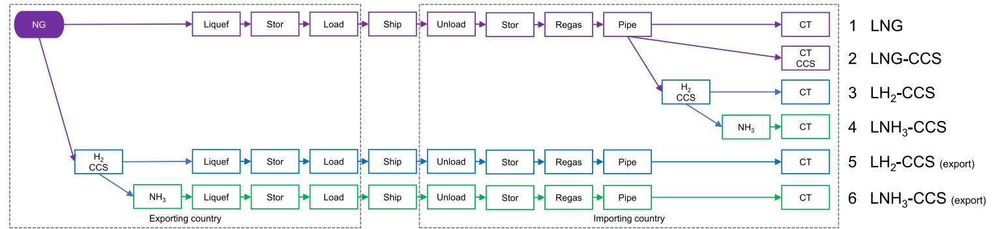

In a new paper published in Environmental Research Letters, an international team of researchers conducted an in-depth analysis of the potential environmental impact of substituting LNG with LH2 or LNH3, particularly in the context of low-carbon futures.

Liquified Natural Gas (LNG) imports have recently gotten renewed interest in Korea, Japan, and Europe. To bring low-carbon alternatives to LNG for these countries, evaluating the possibility of using Liquified Hydrogen (LH2) or Liquified Ammonia (LNH3), coupled with carbon capture and storage (CCS), was needed.
In a new paper published in Environmental Research Letters, an international team of researchers conducted an in-depth analysis of the potential environmental impact of substituting LNG with LH2 or LNH3, particularly in the context of low-carbon futures.
The core findings highlight that the potential of LH2-CCS and LNH3-CCS to reduce greenhouse gas (GHG) emissions is highly uncertain. Estimates suggest that these fuels could reduce GHG emissions by 25-61% compared to LNG, assuming a 100-year global warming potential. However, coupling LNG directly with CCS could lead to substantial GHG reductions of about 74%. Notably, under certain unfavorable conditions, emissions from LH2-CCS and LNH3-CCS might exceed those from LNG by up to 44%, raising questions about the suitability for stringent decarbonization.
A comprehensive framework is provided by analyzing thermodynamic conversion efficiencies, fugitive emissions, and secondary climate impacts, which is crucial for comparing the efficacy of different energy pathways in addressing climate change. This approach reveals that the overall environmental profile of LH2-CCS and LNH3-CCS is complex and requires thorough scrutiny, especially given the significant variation in results and high uncertainties in input data.
The study also delves into the complexities of the alternatives’ supply chains, considering factors like energy conversion efficiency, fugitive emissions, and the direct and indirect global warming potentials along the supply chain. It underscores the need for thorough quantification and consideration of each pathway’s direct and indirect GHG emissions before investing in hydrogen and ammonia technologies.
“Korea and Japan,” said Haewon McJeon, Visiting Professor at KAIST Graduate School of Green Growth and Sustainability, “are ambitious about using imported hydrogen and ammonia to achieve carbon neutrality. However, our research shows this approach could backfire if the hydrogen and ammonia come from fossil fuel energy sources or use ineffective transportation methods, making them unsuitable for carbon neutrality. More research focus is needed to incorporate clean energy-based hydrogen in the decarbonization efforts.”
Read the full paper here: https://iopscience.iop.org/article/10.1088/1748-9326/ad376f/meta
한국어 요약
액화천연가스(LNG)를 액화수소(LH2)나 암모니아(LNH3)로 대체하여 기후에 도움이 될 수 있을까?
액화 천연 가스(LNG) 수입에 최근 한국, 일본, 유럽에서 관심이 다시 높아지고 있다. 이러한 국가들에 LNG에 대한 저탄소 대안을 제공하기 위해, 탄소 포집 및 저장(CCS)과 결합된 액화 수소(LH2) 또는 액화 암모니아(LNH3) 사용 가능성을 평가해야 했다.
’Environmental Research Letters’에 발표된 새로운 논문에서, 국제 연구진은 특히 저탄소 미래의 맥락에서 LNG를 LH2 또는 LNH3로 대체할 경우의 잠재적인 환경 영향에 대한 심층 분석을 수행했다.
연구의 핵심 결과는 LH2-CCS 및 LNH3-CCS가 온실가스(GHG) 배출을 줄일 수 있는 가능성이 매우 불확실하다는 점을 강조한다. 추정에 따르면, 이 연료들은 100년의 지구 온난화 가능성을 가정할 때, LNG에 비해 온실가스 배출량을 25-61% 감소시킬 수 있다. 그러나 LNG를 직접 CCS와 결합하면 오히려 약 74% 만큼의 상당한 온실가스 감축을 이끌어낼 수 있다고 보여진다. 특히, 특정 불리한 조건에서 LH2-CCS 및 LNH3-CCS의 배출량은 LNG의 배출량을 최대 44%까지 초과할 수 있어, 엄격한 탄소 감축을 위한 적합성에 대한 의문이 제기된다.
이 연구는 열역학적 변환 효율성, 비산 누출 및 2차 기후 영향을 분석하여 포괄적인 프레임워크를 제공하며, 이는 기후 변화를 해결하는 데 있어 다양한 에너지 경로의 효율성을 비교하는데 중요하다. 이 접근법은 LH2-CCS와 LNH3-CCS의 전반적인 환경 프로필이 복잡하고 철저한 조사가 필요하다는 것을 보여준다. 특히 결과의 상단한 변동성과 입력 데이터의 높은 불확실성을 고려하면 더욱 그렇다.
이 연구는 또한 에너지 변환 효율성, 비산 누출, 공급망에 따른 직간접적인 지구 온난화 잠재력과 같은 요소를 고려하여 대안 공급망의 복잡성을 조사한다. 이는 수소 및 암모니아 기술에 투자하기 전에 각 경로의 직접 및 간접적인 온실가스 배출량을 철저히 정량화하고 고려할 필요성을 강조한다.
KAIST 녹색성장지속가능대학원의 전해원 방문교수는 “한국과 일본은 탄소 중립을 달성하기 위해 수입 수소와 암모니아를 사용하는 것에 대해 야심 찬 계획을 가지고 있다. 그러나 이번 연구에 따르면 화석 연료 에너지원에서 생산되거나 비효율적인 운송 방법을 사용한 수소와 암모니아는 탄소 중립에 부적합하다는 것을 보여준다. 탄소중립을 위해서는 청정 에너지 기반 수소의 역활이 중요하다”고 말했다.
논문 링크: https://iopscience.iop.org/article/10.1088/1748-9326/ad376f/meta